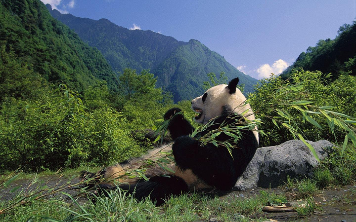
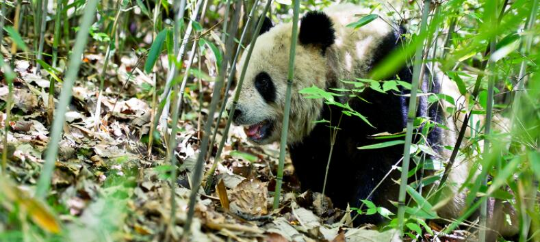

 28 Feb 卧龙自然保护区介绍 卧龙自然保护区位于四川省阿坝藏族、羌族自治州汶川县西南部，邛崃山脉东南坡，距四川省会成都130公里，交通便利。 卧龙自然保护区是国家级第三大自然保护区。四川省面积最大、自然条件最复杂、珍稀动植物最多的自然保护区。 保护区横跨卧龙、耿达两乡，东西长52公里、南北宽62公里，总面积约70万公顷。 主要保护西南高山林区自然生态系统及大熊猫等珍稀动物。 在卧龙自然保护区实现“互联网+”熊猫动漫文化，能够帮助大熊猫文化的全方位传播，促进大熊猫文化产业的蓬勃发展， 培养出新的大熊猫文化产业链，同时提倡保护野生动物的宗旨。 用户01 0 评论
13 Dec 中国野生动物保护协会举办保护候鸟志愿者“护飞行动”纪实展览 2020年12月7日-12日，中国野生动物保护协会候鸟保护志愿者“护飞行动”纪实展览在国家林业草原局办公大楼一楼大厅举办。 展览展出了野生动物保护志愿者近年来参加中国野生动物保护协会倡议发起的保护候鸟志愿者“护飞行动”近200幅具有鲜明代表性、 内容丰富详实的图片和影像资料，充分展现了广大野保志愿者开展科普宣传、清网救护、打击犯罪取得的丰硕成果和不惧艰难、 甘于奉献野生动物保护事业的亮丽风采。 展览介绍了“护飞行动”领导重视、职能部门支持、多方协作、媒体宣传、日常辅导及构建候鸟保护长效机制，推动野保志愿活动健康发展等7个方面的做法。 展览现场还展出了盗猎者用于捕鸟兽的夹、套等作案工具，吸引参观者目光和深思；由中国野生动物保护协会开发的“识鸟家” 鸟类识别app小程序也引起了大家广泛兴趣并关注。 用户02 0 评论
 19 Jan 大熊猫：世界性的成功保护故事 大熊猫——世界上最濒危的物种之一，以其憨态可掬的形象闻名于世，被大众所喜爱。其独特的生物学特性和濒危状况，也是科学研究和物种保护的重要目标。 三十年来，随着相关野生动物保护法的颁布实施以及各级自然保护区的建立，大熊猫的种群数量和分布范围持续增加。最近一次的全国第四次大熊猫调查结果显示， 野生大熊猫种群数量为1864只，栖息地面积为258万公顷，相对上世纪九十年代增加了一半左右的面积。 这表明，我国在圈养大熊猫人工繁育方面取得了巨大成就，目前圈养种群已超过600只，为大熊猫放归工程的实施提供了有力保障。 用户03 0 评论